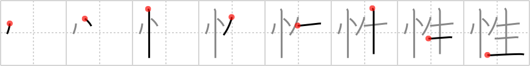

性
← →
sex

Reading:
On-Yomi: セイ、ショウ — Kun-Yomi: さが
Heisig story:
State of mind . . . cell.
Koohii stories:
1) [Immacolata] 5-4-2006(186): Sex is the only state of mind for many men through their whole life.
2) [Virtua_Leaf] 11-1-2008(113): When you're in the state of mind for creating new lives.
3) [nest0r] 7-2-2008(64): I think this can also mean gender–one could look at the differences between gender and sex: one is a state of mind, the other is set biologically in the cells.
4) [jaresty] 19-11-2007(57): Data's life did not begin with sex.
5) [dingomick] 3-9-2007(21): Despite being of the same sex, Data and Frankenstein do each other knowing it's the only sex they'll ever get. (Image: do I even have to paint this one…?).